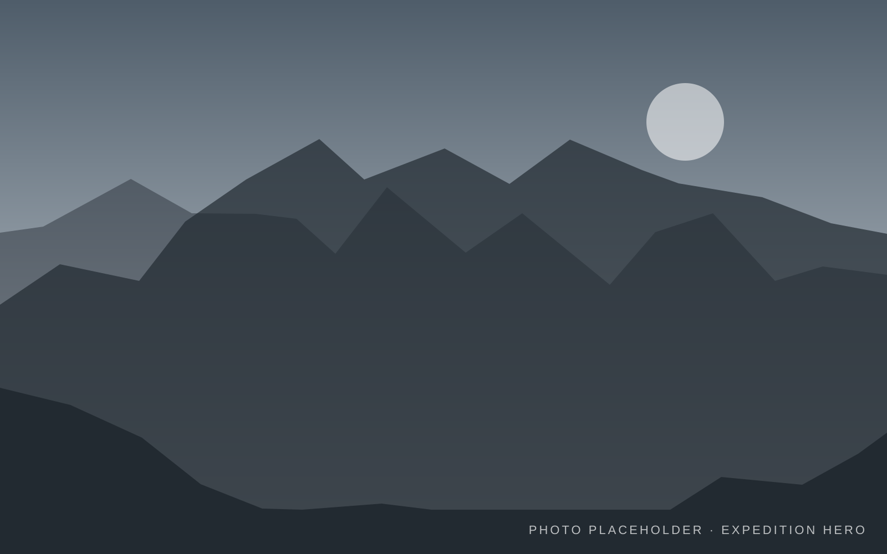
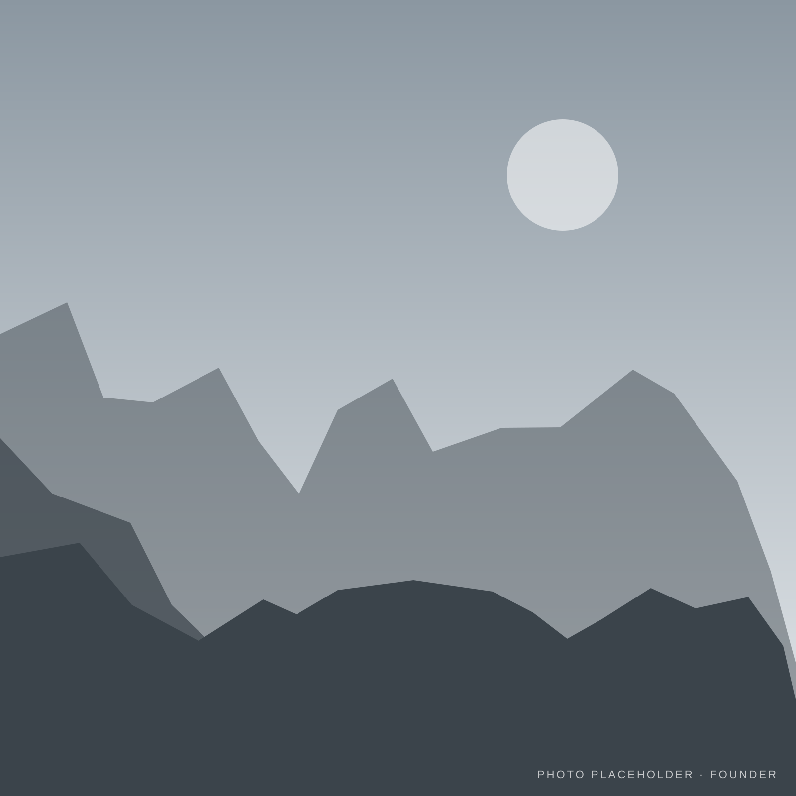
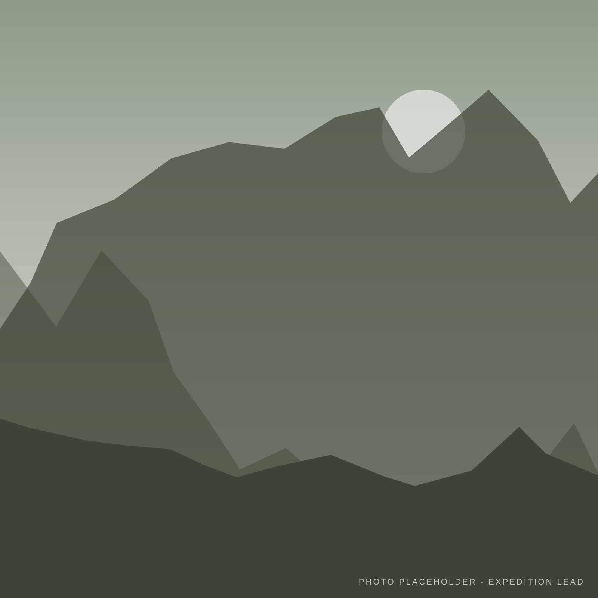
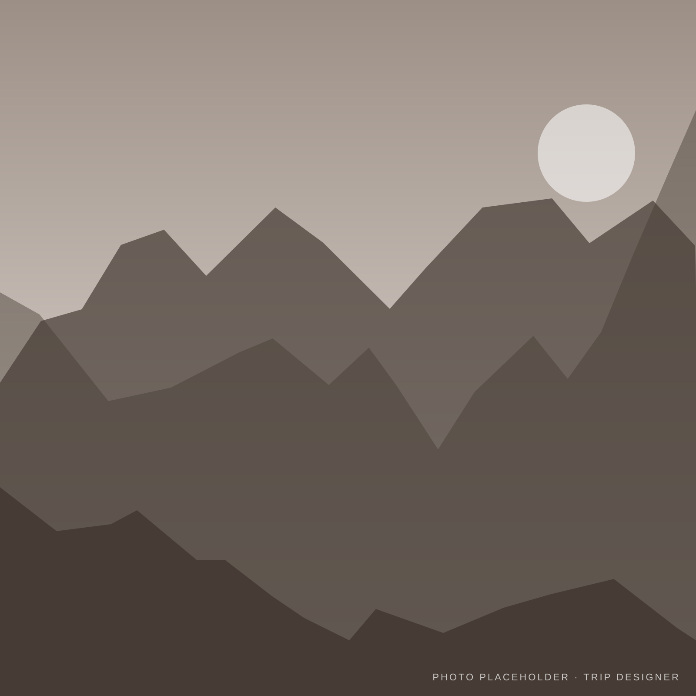

Read the Terrain
Map people, mountain people.
Why Contour
Contour lines show you the shape of the land before you ever set foot on it. That's how we approach every trip: understand the terrain, plan with care, then go and experience it fully.
Contour Expeditions was founded by guides and lifelong adventurers who spent years planning trips for friends: high passes in the Andes, hut-to-hut routes in the Alps, and bikepacking loops through the Balkans. Today we lead small guided expeditions, design self-guided adventures with full support, and help travellers build their own expeditions with trusted partners around the world.

What We Stand For
Safety First
Certified guides, conservative decisions, proper acclimatization, and emergency plans on every trip.
Local Partners
We work with local guides, arrieros, hut keepers, and hosts, and pay fairly.
Low Impact
Small groups, Leave No Trace practices, and locally owned lodging wherever possible.
Who You'll Travel With

Your Name
Placeholder bio: background, favourite mountains, and why you started Contour Expeditions.

Team Member
Placeholder bio: certifications, expeditions led, and specialities.

Team Member
Placeholder bio: regions of expertise and the routes they've scouted.
Let's Plan Something Big
Join a guided expedition, head out on your own, or build something new.
Get in Touch →